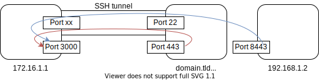

ssh
This page introduces diverse topics / functions related to SSH which go beyond the basics. They are mostly unused by beginners and casual SSH users but are very much appreciated once you know about them.
SSH is sometimes referred to as “poor man’s VPN”.
- There are two distinct parts to SSH: the client and the server.
- A user’s client config can generally be found at
~/.ssh/- The
~/.ssh/configfile specifies parameters per host. This way, most ssh flags can be replaced.
- The
- The server’s config can be found at
/etc/ssh/sshd_config.
SSH
Client Cheatsheet
Collection of rather common simple commands:
-pflag to use a different port- Most basic form to execute a remote command is using backticks:
ssh user@domain.tld 'sudo apt install git' ssh-copy-id user@hostto copy own public key to host
Use the ssh config file
The ssh config file is located at ~/.ssh/config.
Assume you originally wrote ssh -p 2222 tony@192.168.1.2. After writing
Host stark-machine
User tony
Hostname 192.168.1.2
Port 2222
into the config file, you can now connect with ssh stark-machine.
There are many directives for virtually any existing command line flag.
Some are outlined in other paragraphs where needed.
A comprehensive list see man ssh_config.
ssh proxy jump
A common scenario is that only one host in a LAN is exposed to the outside, e.g., by port forwarding. Let’s call it the entry host. We might want to connect to a different host (call it target host) inside that LAN that is not exposed to the outside.
What we can do first connect to the entry host, and from there to the target host as the target host is in the same subnet as the entry host:
What we can do with ssh instead is make a proxy jump:
tony@stark:> ssh -J keeper@entryhost admin@targethost
This is equivalent to ssh’ing into entryhost and from there ssh’ing into targethost.
The same can be achieved by adding the ProxyJump directive for the
target host in ~/.ssh/config.
Make remote port locally available
Using the -L flag, one can make a port locally available
that is visible from the remote host. The basic command
looks as follows:
ssh -L localport:192.168.x.x:remoteport user@domain.tld

In the above graphic, the arrows correspond to:
- Red:
ssh -L 3000:localhost:443 user@192.168.1.1 - Blue:
ssh -L 3000:192.168.1.2:8443 user@192.168.1.1
Assuming for example 192.168.1.1:443 was running a webserver,
we could on our local host (where we issued the command) open a
browser and go to https://localhost:3000 and would find the
website hosted on 192.168.1.1:443.
The localhost in ssh -L 3000:localhost:443 user@192.168.1.1 refers
to 192.168.1.1 (localhost from its perspective) whereas the localhost
in the URL refers to your localhost 172.16.1.1.
The -L flag is used if the command is issued from the local machine,
i.e., when the target port should be made available locally.
There is also the -R flag which makes a port available on the
remote host.
TODO: more detailed -R command
Automatic tmux session
Traditionally, if you experience connection loss during an ssh session, logging back in brings you into a new shell with no access to the old one. If you had a running program in the previous shell (e.g. compiling something) you don’t get access to it anymore. This is where tmux comes in as it allows for tty sessions to exist over different ssh sessions.
Normally you would ssh starkmachine to connect and then
tmux new-session -s ssh-tmuxsession to create a new session or after a connection
loss tmux attach-session -t ssh-tmuxsession to reattach.
Adding the following to ~/.ssh/config allows you to automatically
attach to the session (or create it if it doesn’t already exist)
every time you connect via ssh (i.e. on connecting with ssh starkmachine).
Host starkmachine
User tony
HostName 192.168.1.2
RemoteCommand tmux new-session -A -s ssh-tmuxsession
RequestTTY yes
An even more advanced variant to create new sessions on the fly:
Host starkmachine-*
User tony
HostName 192.168.0.12
RemoteCommand tmux new-session -A -s ${%n}
RequestTTY yes
Use SOCKS5 proxy
TODO
Forward X11
TODO
this is not only ssh, sshd must be configured appropriately
SSHD
config file location: /etc/ssh/sshd_config
- set
PubkeyAuthentificationtoyesfor auth via public key - set
PasswordAuthenticationtonoto only allow public key systemctl restart sshd.servicefor changes to take effect
all of the above requires sudo
Reverse SSH tunnel
ssh -p2000 -fNC -R 10011:localhost:22 pi@dyn.IP.adresse for reverse
ssh -p 10011 localhost on gateway
Problems with cronjob at reboot.. here a solution:
ssh-agent bashto create a new agentssh-add ~/.ssh/id-rsato add key and enter password
the above is valuable for cases like ansible, where otherwise the password would need entering many times